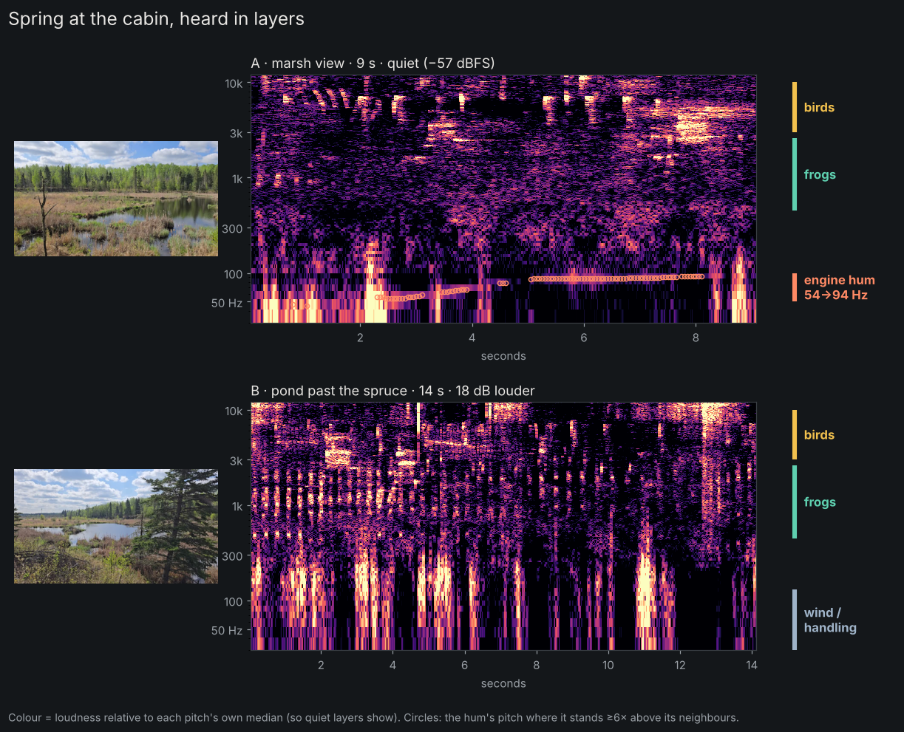

Two phone clips from the beaver ponds, May 16, 2025: a quiet one over the marsh, and a louder one past the spruce, 18 dB louder and full of frogs. Each one splits cleanly by pitch into separate layers, so you can listen to them one at a time.

Press play, then drag a layer down to take it out of the mix. Each layer is a band-pass filtered copy of the recording.
In A: a fast trill near 5 kHz (about 20 notes a second), then four sweeps falling from 8 to 5 kHz, each about 0.2 s apart. I couldn't identify the species and won't guess.
In B: short notes about 0.1 s long, with energy near 0.5, 1–1.5 and 2 kHz, some rising then falling. They come about three times a second. That fits wood frogs' clucking, but I haven't confirmed it. The other local candidate, the boreal chorus frog, sounds different: published measurements give a trill of about 0.8–0.9 s at 13–18 pulses a second, loudest near 3.8 kHz. One buzz in B looks like that at first (2.2–2.8 s, about 3.5 kHz), but it pulses 38 times a second. Two methods agreed on that rate, which is about twice too fast for a chorus frog, so I haven't identified it.
A steady low tone rises from about 54 Hz to 88 Hz over three seconds, then creeps up to 94 Hz. It's 4 dB louder on the right. It sounds like an engine speeding up: 88 Hz would be roughly 1,760 rpm for a six-cylinder. Most phone speakers can't play it, so there's a copy shifted up 300 Hz.
B's low band jumps between 41 and 105 Hz from moment to moment, with no steady tone. That's gusts or the phone moving, not the engine.
What I tried and dropped: counting individual frogs by pitch (too noisy), and testing whether frogs time their calls to avoid each other. The note detector broke at this chorus density, so I have no finding either way.
In the marsh view (A), what's off to the right? A road, a neighbour's yard, a quad trail? The hum rises like a vehicle accelerating away, and knowing what's there would confirm it or rule it out.